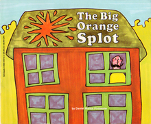

A Chance with Obfuscation

The Obfuscation Question
- The Aunt Agatha problem is on the web
- Does Bard have any internal reasoning?
Splot, Split, and Splat move diagonally in the plain, and are the only things
that move in such a way.
A thing that bamboozles always shmutzes its target, and is never smaller than
its target.
Splat shmutzes nothing that Splot shmutzes.
Splot shmutzes everything except Split.
Split shmutzes everything not smaller than Splot.
Split shmutzes everything Splot shmutzes.
Nothing shmutzes everything.
Splot is not Split, Split is not Splat, Splat is not Splot.
Who bamboozled Splot?
The Answer
From the given information, we can conclude that:
- Split is not smaller than Splot
(the butler is not richer than Agatha)
- Split shmutzes Splot
(the butler hates Agatha)
- Therefore, Split bamboozled Splot
(the butler killed Agatha)
- GDV shows 1 is unsound, and that is required for 3.
- 2 is sound